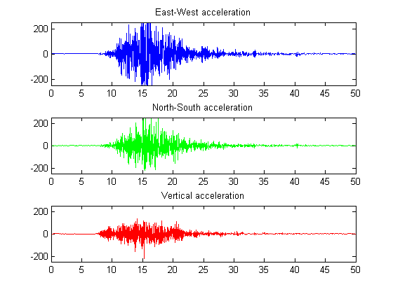
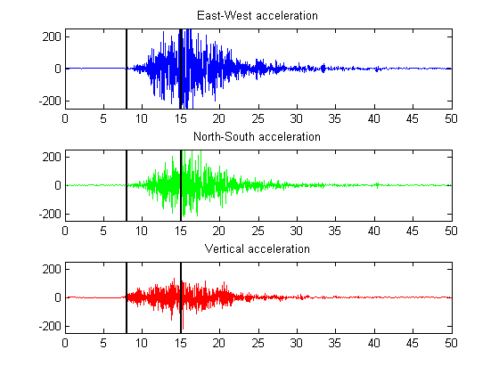
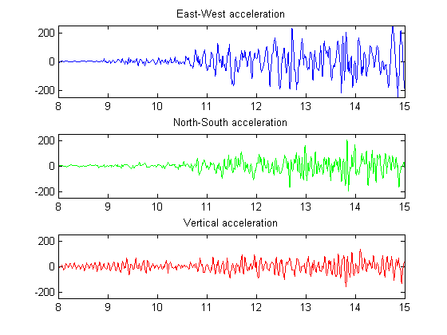
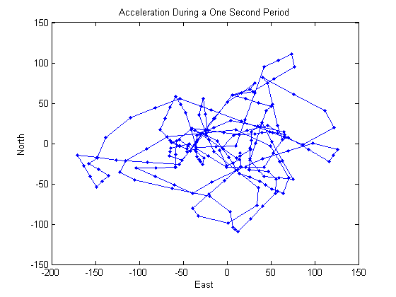
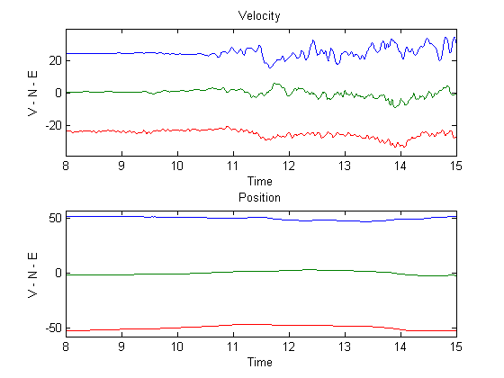
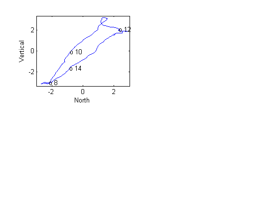
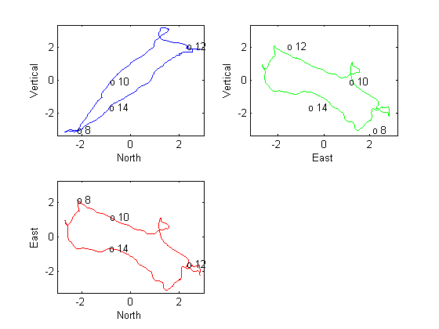
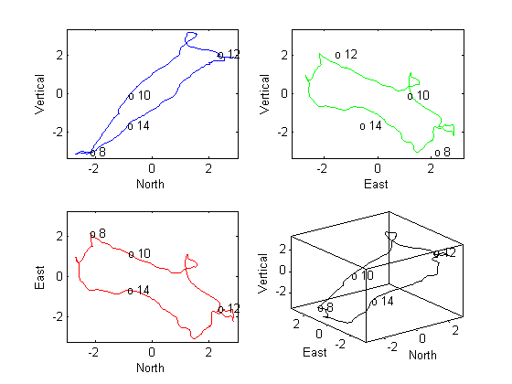
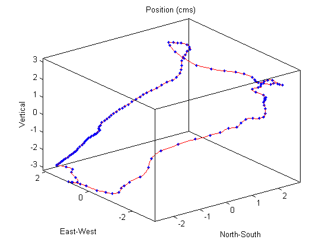

This demo shows how to analyze and visualize real-world earthquake data.
Authors: C. Denham, 1990, C. Moler, August, 1992.
The file QUAKE.MAT contains 200Hz data from the October 17, 1989 Loma Prieta earthquake in the Santa Cruz Mountains. The data are courtesy of Joel Yellin at the Charles F. Richter Seismological Laboratory, University of California, Santa Cruz. Start by loading the data.
load quake e n v whos e n v
Name Size Bytes Class e 10001x1 80008 double array n 10001x1 80008 double array v 10001x1 80008 double array Grand total is 30003 elements using 240024 bytes
In the workspace now are three variables containing time traces from an accelerometer in the Natural Sciences' building at UC Santa Cruz. The accelerometer recorded the main shock of the earthquake. The variables n, e, v refer to the three directional components measured by the instrument, which was aligned parallel to the fault, with its N direction pointing in the direction of Sacramento. The data is uncorrected for the response of the instrument.
Scale the data by the gravitational acceleration. Also, create a fourth variable, t, containing a time base.
g = 0.0980; e = g*e; n = g*n; v = g*v; delt = 1/200; t = delt*(1:length(e))';
Here are plots of the accelerations.
yrange = [-250 250]; limits = [0 50 yrange]; subplot(3,1,1), plot(t,e,'b'), axis(limits), title('East-West acceleration') subplot(3,1,2), plot(t,n,'g'), axis(limits), title('North-South acceleration') subplot(3,1,3), plot(t,v,'r'), axis(limits), title('Vertical acceleration')
Look at the interval from t=8 seconds to t=15 seconds. Draw black lines at the selected spots. All subsequent calculations will involve this interval.
t1 = 8*[1;1]; t2 = 15*[1;1]; subplot(3,1,1), hold on, plot([t1 t2],yrange,'k','LineWidth',2); hold off subplot(3,1,2), hold on, plot([t1 t2],yrange,'k','LineWidth',2); hold off subplot(3,1,3), hold on, plot([t1 t2],yrange,'k','LineWidth',2); hold off
Zoom in on the selected time interval.
trange = sort([t1(1) t2(1)]); k = find((trange(1)<=t) & (t<=trange(2))); e = e(k); n = n(k); v = v(k); t = t(k); ax = [trange yrange]; subplot(3,1,1), plot(t,e,'b'), axis(ax), title('East-West acceleration') subplot(3,1,2), plot(t,n,'g'), axis(ax), title('North-South acceleration') subplot(3,1,3), plot(t,v,'r'), axis(ax), title('Vertical acceleration')
Focusing on one second in the middle of this interval, a plot of "East-West" against "North-South" shows the horizontal acceleration.
subplot(1,1,1) k = length(t); k = round(max(1,k/2-100):min(k,k/2+100)); plot(e(k),n(k),'.-') xlabel('East'), ylabel('North'); title('Acceleration During a One Second Period');
Integrate the accelerations twice to calculate the velocity and position of a point in 3-D space.
edot = cumsum(e)*delt; edot = edot - mean(edot); ndot = cumsum(n)*delt; ndot = ndot - mean(ndot); vdot = cumsum(v)*delt; vdot = vdot - mean(vdot); epos = cumsum(edot)*delt; epos = epos - mean(epos); npos = cumsum(ndot)*delt; npos = npos - mean(npos); vpos = cumsum(vdot)*delt; vpos = vpos - mean(vpos); subplot(2,1,1); plot(t,[edot+25 ndot vdot-25]); axis([trange min(vdot-30) max(edot+30)]) xlabel('Time'), ylabel('V - N - E'), title('Velocity') subplot(2,1,2); plot(t,[epos+50 npos vpos-50]); axis([trange min(vpos-55) max(epos+55)]) xlabel('Time'), ylabel('V - N - E'), title('Position')
The trajectory defined by the position data can be displayed with three different 2-dimensional projections. Here is the first with a few values of t annotated.
subplot(1,1,1); cla; subplot(2,2,1) plot(npos,vpos,'b'); na = max(abs(npos)); na = 1.05*[-na na]; ea = max(abs(epos)); ea = 1.05*[-ea ea]; va = max(abs(vpos)); va = 1.05*[-va va]; axis([na va]); xlabel('North'); ylabel('Vertical'); nt = ceil((max(t)-min(t))/6); k = find(fix(t/nt)==(t/nt))'; for j = k, text(npos(j),vpos(j),['o ' int2str(t(j))]); end
Similar code produces two more 2-D views.
subplot(2,2,2) plot(npos,epos,'g'); for j = k; text(epos(j),vpos(j),['o ' int2str(t(j))]); end axis([ea va]); xlabel('East'); ylabel('Vertical'); subplot(2,2,3) plot(npos,epos,'r'); for j = k; text(npos(j),epos(j),['o ' int2str(t(j))]); end axis([na ea]); xlabel('North'); ylabel('East');
The fourth subplot is a 3-D view of the trajectory.
subplot(2,2,4) plot3(npos,epos,vpos,'k') for j = k;text(npos(j),epos(j),vpos(j),['o ' int2str(t(j))]); end axis([na ea va]); xlabel('North'); ylabel('East'), zlabel('Vertical'); box on
Finally, plot a dot at every tenth position point. The spacing between dots indicates the velocity.
subplot(1,1,1) plot3(npos,epos,vpos,'r') hold on step = 10; plot3(npos(1:step:end),epos(1:step:end),vpos(1:step:end),'.') hold off box on axis tight xlabel('North-South') ylabel('East-West') zlabel('Vertical') title('Position (cms)')